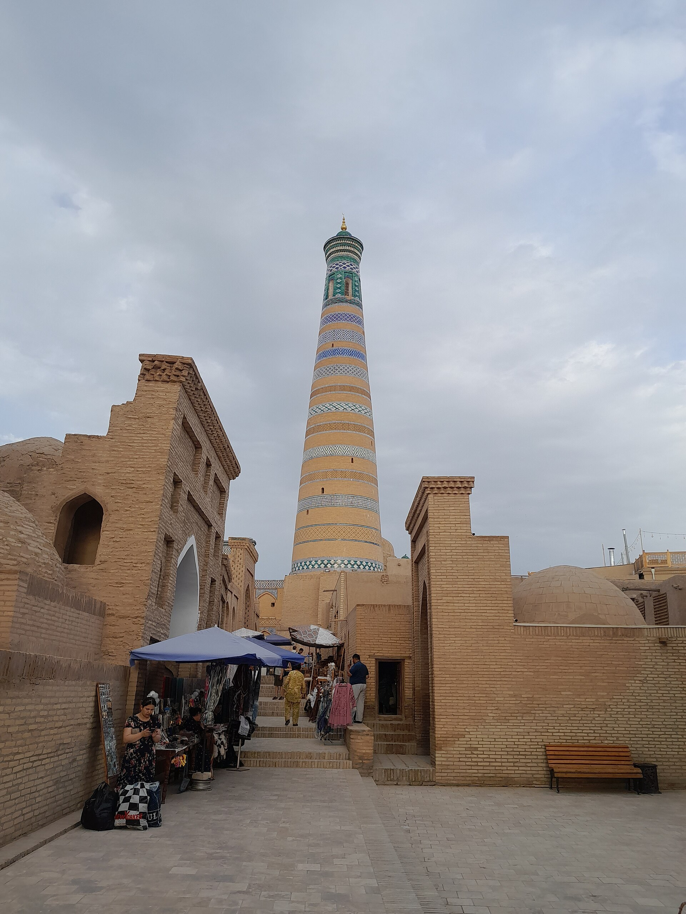

The mahalla institution in the independence years: bodies of citizens' self-government (1992–1999)
The mahalla is a traditional community with deep historical roots in Uzbekistan. In the first years of independence the state turned it into a formal legal institution — a body of citizens' self-government. This history explainer sets out, on the basis of sources, the 1992 Constitution, the 1993 "Mahalla Law" and the subsequent reforms.

The mahalla is a traditional structure based on local community and neighborliness that has existed in Uzbekistan for centuries. In the years of independence it acquired a new legal status: as part of nation-building, the mahalla was formally turned into a body of citizens' self-government. Below the process is covered as sourced facts only.
The traditional mahalla
Historically the mahalla, as a territory where neighbors are united, was a center of social life: weddings and funerals, communal work (hashar), mutual aid and the resolution of disputes through elders all took place there. Before independence it was largely an informal, traditional institution; after independence it was given a formal legal form.
1992: the "Mahalla" foundation
In 1992, in order to support the work of the mahallas organizationally and legally, the "Mahalla" public charity foundation was established. This was one of the first steps, in the very first year of independence, toward making the mahalla part of state policy.

The 1992 Constitution: Article 105
The Constitution of the Republic of Uzbekistan, adopted on 8 December 1992, enshrined citizens' assemblies for the first time in the nation's history as bodies of territorial self-government. Under the Constitution, the self-government bodies in towns, villages and auls, as well as in the mahallas of cities, are assemblies of citizens that elect a chairman (oqsoqol/aksakal) and his advisers for a set term.
1993: the "Mahalla Law"
In September 1993 the Law "On the bodies of self-government of citizens" was adopted; it is often called the "Mahalla Law." The law gave the mahalla a clear legal status, functions and structure. It was later revised and updated in 1999 and 2013.
Structure: the rais and the oqsoqol
The law formed a two-layer administration in the mahalla: on the one hand a formal mahalla committee consisting of a chairman (rais) and his assistants; on the other the tradition of an oqsoqol elected by residents. From 1999 the procedure for appointing the chairman was defined in documents.
The widening scope of functions
Under the law the mahalla's responsibilities expanded: distributing state allowances and assistance to low-income families, social protection, helping to reconcile family disputes, assisting in maintaining public order, and supporting local entrepreneurship, among others. Thus in the 1990s the mahalla became one of the main channels for delivering targeted social assistance.
Scale
According to estimates, Uzbekistan is divided into roughly ten thousand mahallas; although each mahalla's population varies, it averages around two thousand people. The mahalla institution became a distinctive mark of nation-building in the independence period — an example of turning a traditional community into a formal system of local self-government.